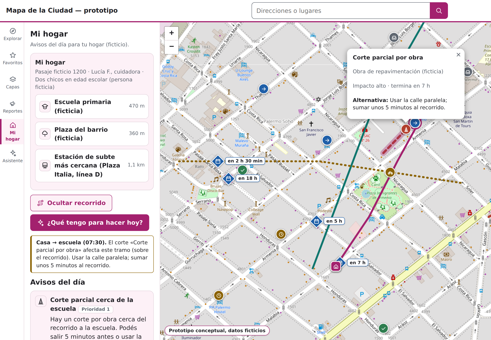
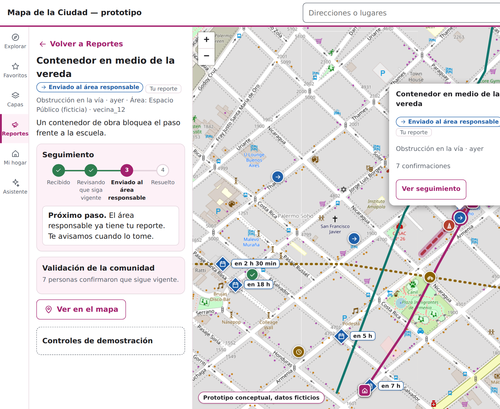
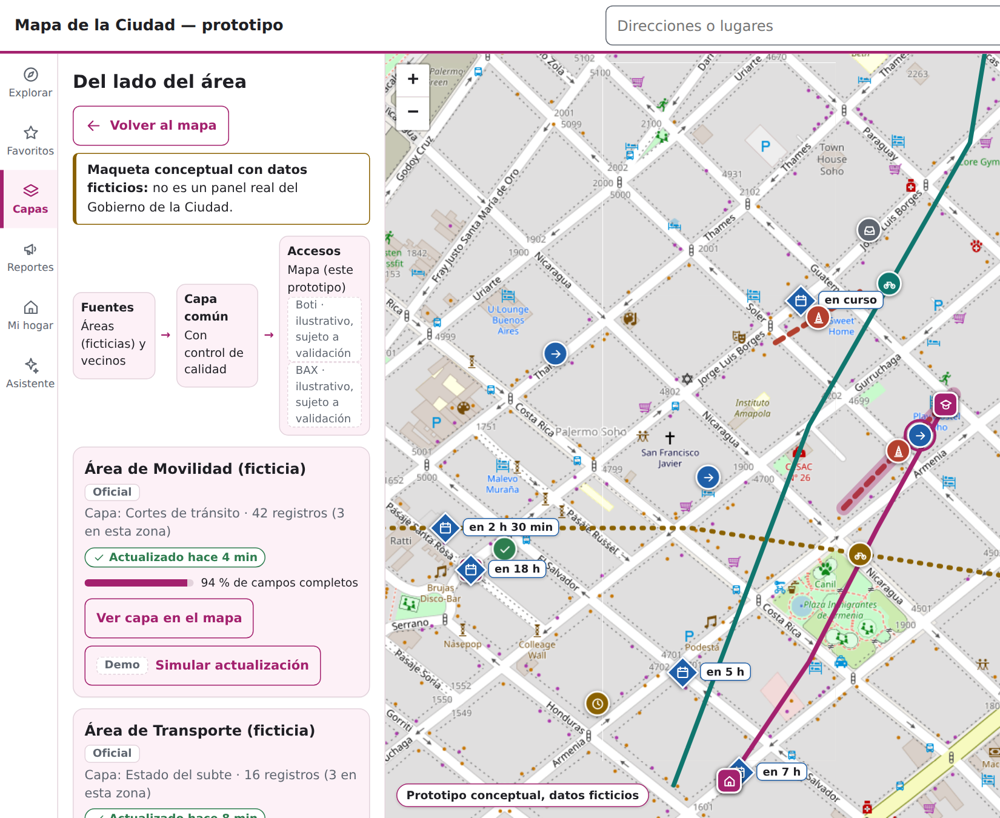
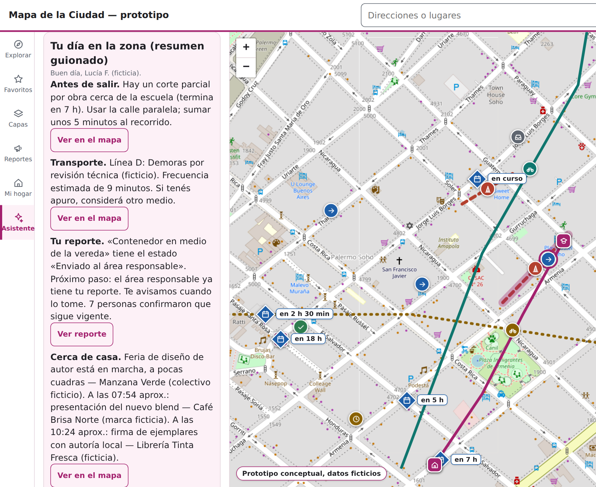
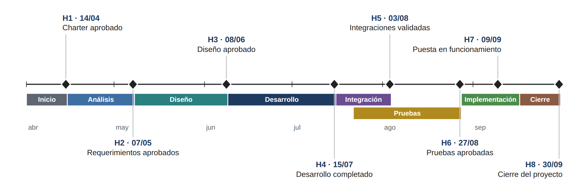
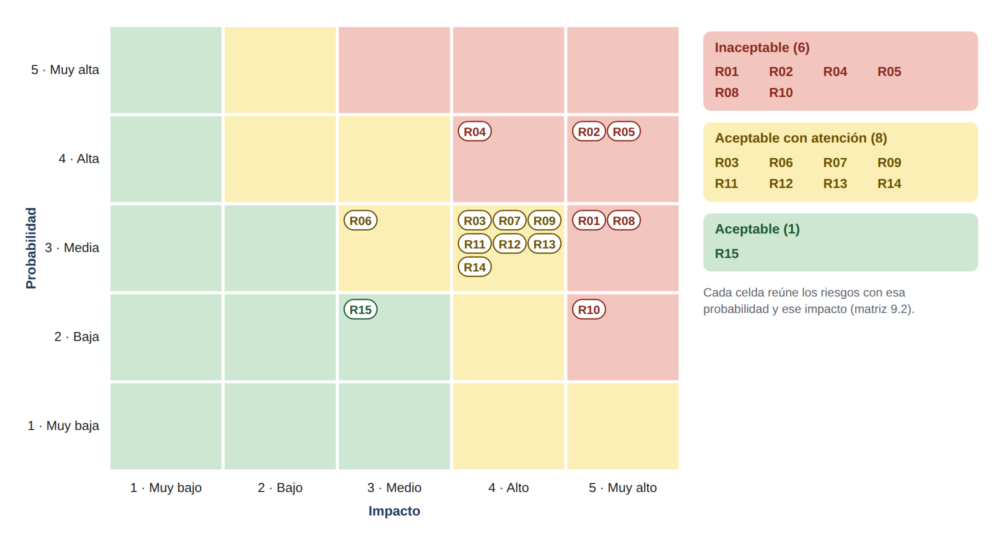

Taller de Gestión de Proyectos Digitales · TP integrador en cascada · Grupo 01
Modernización del Mapa Interactivo de la Ciudad
Una capa geográfica común para que el vecino consulte, reporte y siga lo que pasa en su entorno, sin saber qué área lo gestiona.
Bruno Celia · Camil Malespina · Corina Cesarini · Jonas Gho · Matias Sanchez · Miriam Raposo · Oscar Moreira · Pablo Galloro · Víctor Riveros Araujo · Víctor Avendaño
Reglas para todos: no leer la diapositiva (la diapositiva muestra, ustedes cuentan); una idea por slide; mirar al jurado; terminar siempre con la frase de pase, que nombra al siguiente; cronometrar el ensayo general (2:30 por persona, 25 minutos en total). Si alguien se pasa, el que sigue recorta, no acelera.
Bruno. Arrancar sin leer la diapositiva. «Buenas. Somos el grupo 01 y les venimos a proponer algo concreto: modernizar el Mapa Interactivo de la Ciudad.» Pausa. «Pero antes de hablar de mapas, les quiero presentar a alguien.» Pasar de inmediato a la siguiente. Tiempo de esta diapositiva: 10 segundos.
El problema
Una mañana con información fragmentada
Bruno
07:30
Lucía organiza el recorrido a la escuela con sus dos hijos.
07:40
Busca si hay obras: la información está repartida entre canales.
07:50
Quiere reportar un corte, pero no sabe qué área lo gestiona.
Después
Envía el reclamo y no puede saber si sigue vigente ni quién lo tomó.
La información existe. El problema es que está fragmentada, y el vecino no ve qué pasa con lo que reporta.
Bruno. Abrir con una pregunta al público, levantando la mano: «¿Quién sabe a qué área hay que avisarle si hay un contenedor bloqueando la vereda?» Esperar dos segundos. «Nosotros tampoco sabíamos.» Después contarlo como una historia, en presente: «Son las siete y media. Lucía tiene dos chicos y los tiene que llevar a la escuela. Quiere saber si hay obras en el camino: abre una página, otra, otra. Ve un corte y lo quiere reportar, pero ¿a quién? ¿Tránsito? ¿Espacio Público? Manda el reclamo… y nunca más sabe nada.» Remate: «Lucía no es real: es la persona que construimos en el Design Thinking a partir de entrevistas a 10 vecinos. Pero esa mañana le pasa a cualquiera de nosotros.» Fuente: TP 4.1 y escenario de usuario.
Hoja de ruta
De la idea al presupuesto, en diez relevos
Bruno
01
El problema
Bruno
02
Canvas · Design Thinking
Camil
03
Test y prototipo
Corina
04
Charter: método y objetivos
Jonas
05
Charter: alcance y entregables
Matias
06
Charter: criterios y roles
Víctor A.
07
Gantt e hitos
Oscar
08
Stakeholders
Pablo
09
Riesgos
Miriam
10
Presupuesto y cierre
Víctor R.
■ Qué proponemos y por qué es una buena idea■ Cómo lo gestionamos en cascada
Bruno. Diez segundos, no más: «La primera mitad es qué proponemos y por qué vale la pena; la segunda, cómo lo planificamos con cascada: alcance, tiempos, personas, riesgos y plata.» Pase: «Camil les cuenta la idea.»
02 · La idea
Un solo mapa entre los datos y los canales
Camil
Camil. «La propuesta es usar la ubicación como punto de encuentro.» Recorrer el diagrama de izquierda a derecha: «A la izquierda, quienes tienen el dato: las áreas del gobierno, como Transporte y Cultura, y USIG con la infraestructura. Abajo, los vecinos, que también aportan: reportan y validan. En el medio, lo que construye el proyecto: una capa geográfica común, con control de calidad. Y a la derecha, la misma capa se consulta desde el Mapa Web, desde Boti y desde BAX.» Frase para cerrar: «El vecino no tiene que saber qué área gestiona qué: busca un lugar y ve todo lo que pasa ahí.» Fuente: resumen ejecutivo y Canvas (TP 3).
02 · Canvas
Una plataforma multilateral: valor para cada lado
Camil
Segmento principal
Hogares de la Ciudad
Consultan su entorno en un solo lugar, reportan y siguen sus incidencias.
Lado institucional
Áreas del GCBA
Socias y clientas a la vez: aportan el dato y reciben reportes georreferenciados y validados.
Tercer lado · opcional
Socios geolocalizados
Banco Ciudad, Pase Cultural. Evolución futura, fuera del alcance de esta versión.
Fuente de valor: valor público y menos gasto en soluciones fragmentadas. Canales: Mapa Web/Mobile, Boti y BAX.
Camil. Concepto de la cátedra en una línea: «El Canvas parte de la propuesta de valor, y cuando hay dos lados que se necesitan es una plataforma multilateral.» Después, nuestro caso: los hogares son el segmento principal; las áreas del gobierno son socias y clientas al mismo tiempo; y hay un tercer lado opcional, los socios con oferta geolocalizada, que dejamos explícitamente para el futuro. Venta: «Hoy cada área mantiene su pedacito; con una capa común se gasta menos y se ve más.» Fuente: TP 3. Sin pase: sigue Camil con «¿Y cómo sabemos que esto es lo que la gente necesita?»
02 · Design Thinking
No lo inventamos en un escritorio
Camil
EmpatizarEntrevistas a 10 vecinos y escenario de Lucía
DefinirPunto de vista, perfil e historia de usuario
IdearMapa común + reportar + validar + seguir
PrototiparBaja fidelidad: tres pantallas
TestearEvaluación con un usuario del perfil
Pregunta de diseño
«¿Cómo podríamos facilitar que las personas consulten, reporten y sigan situaciones de su entorno sin necesitar conocer qué área del Gobierno las gestiona?»
Camil. «El Canvas es una hipótesis. Antes de planificar nada, la pusimos a prueba con Design Thinking.» Presentar el método en una frase: cinco pasos, de entender a la persona a probar la solución con ella (señalar la fila, sin leerla). Cerrar con la pregunta de diseño, leída despacio: es la frase más importante del TP. No contar los resultados: son de Corina. Fuente: TP 4. Pase: «Corina les cuenta qué encontramos en cada paso.»
03 · Testear
El test encontró el punto débil
Corina
Encontrar
Claro
Ubica la incidencia y reconoce la fuente oficial
Reportar
Fluido
Marca ubicación y categoría; entiende el envío
Seguir
Confuso
Duda ante el estado «En validación»
«¿Quién confirma que el reporte sigue vigente?»
Ajuste: estados en lenguaje claro y el próximo paso a la vista.
Corina. Recorrer los pasos en 30 segundos antes de mirar la diapositiva: «Empatizar: entrevistas semiestructuradas a 10 vecinos (muestra por conveniencia). Tres patrones: usan muchos canales, no saben qué área corresponde y después de reportar no saben qué pasó. Definir: eso se resume en Lucía y en la pregunta que leyó Camil. Prototipamos en baja fidelidad, tres pantallas, y lo testeamos con un usuario del perfil.» Ahora la diapositiva: «El test salió bien en dos de tres pasos. En el tercero, el seguimiento, el usuario se trabó con el estado "En validación" y preguntó: ¿quién confirma que el reporte sigue vigente?» Venta: «Encontramos el problema antes de escribir una línea de código, que es cuando más barato sale arreglarlo.» Honestidad: con un solo participante es orientativo; el TP prevé repetir el test en Diseño UX/UI y en las pruebas de usabilidad (actividades 16 y 29). Fuente: TP 4.1 a 4.5. Sin pase: «Les muestro cómo quedó.»
03 · Prototipo
07:30: el mapa le avisa a Lucía
Corina

Todo lo cercano en un solo mapa: cortes, ciclovías, subte, eventos y reportes.
El recorrido a la escuela muestra qué corte la afecta y qué alternativa tiene.
Reportar lleva tres pasos: categoría, ubicación y enviar.
Prototipo conceptual · datos ficticios
Corina. Primero el aviso: «Esto es un prototipo conceptual con datos ficticios, para mostrar casos de uso.» Después volver a la historia: «¿Se acuerdan de Lucía a las 7:30? Abre "Mi hogar" y el mapa ya le dice que hay un corte parcial por obra en el camino a la escuela, que termina en 7 horas, y que si usa la calle paralela suma 5 minutos. No buscó en cinco canales.» Si hay internet y tiempo, mostrarlo en vivo (prototype/mock/index.html); si no, alcanza con la captura. Conexión: Design Thinking, necesidad de «información oficial cercana».
03 · Prototipo
El hallazgo del test, ya resuelto
Corina

«En validación» pasa a «Revisando que siga vigente».
Cada estado dice el próximo paso.
La comunidad confirma: con confirmaciones, el reporte avanza al área; uno dudoso queda marcado.
Responde al riesgo R07: reportes incorrectos o maliciosos
Corina. Esta es la diapositiva que une todo: «Recién vieron que en el test "En validación" confundía. Acá el estado dice "Revisando que siga vigente" y abajo aparece el próximo paso: el área ya tiene tu reporte, te avisamos cuando lo tome.» Señalar la validación de la comunidad: con tres confirmaciones el reporte pasa al área; este ya tiene siete. Uno sin confirmaciones y con tres avisos de que ya no está queda marcado «Sin confirmar» y no desplaza a los reales. «Y esto no es solo usabilidad: es la respuesta al riesgo R07, reportes falsos o maliciosos, que Miriam va a mostrar en la matriz.»
03 · Prototipo
El valor está en integrar, no solo en reportar
Corina

Del lado del área
Cada fuente muestra cuándo se actualizó y qué tan completa está.

«¿Qué tengo para hacer hoy?»
La misma capa, resumida en lenguaje natural. Aquí es un guion simulado.
Corina. «Lo que ve el vecino es la punta del iceberg. Lo que sostiene el proyecto es que cada área entregue su dato a la capa común con su ritmo y su calidad, y que si una fuente se atrasa, se note.» Eso conecta con los riesgos R01 y R02 (disponibilidad y calidad de los datos). El asistente: «No usa inteligencia artificial: es un guion para mostrar lo que se puede hacer con la capa común en un canal como Boti.» Si vienen atrasados, esta es la diapositiva a saltear (quedarse con las dos anteriores). Pase: «Ya vieron qué queremos construir. Jonas les cuenta cómo lo formalizamos: el Charter.»
04 · Charter · Identificación
Cascada, porque el problema es complicado
Jonas
Sabemos qué construir y con qué: APIs oficiales, GIS, canales existentes.
El Sponsor necesita comprometer costo y plazo antes de empezar.
Fases secuenciales con hitos de aprobación: nada avanza sin firma.
Jonas. Abrir el bloque: «El Charter es el documento que autoriza el proyecto. Lo primero que fija es la identificación: nombre, organización (el Gobierno de la Ciudad), duración (6 meses) y la metodología: cascada.» Anticipar la pregunta: «¿Por qué no ágil?» Cynefin: en lo simple, buenas prácticas; en lo complicado, cascada; en lo complejo y caótico, ágil. «Nuestro problema es complicado: hay incertidumbre, pero se resuelve con experiencia, no con experimentos. Sabemos qué construir y con qué tecnología, y el gobierno necesita aprobar un presupuesto y un plazo antes de arrancar.» Reconocer el riesgo propio de cascada: que el alcance crezca (R05, uno de los dos riesgos más altos), que se controla con cambios formales. Fuente: TP 5.1. Sin pase: sigue Jonas con los objetivos.
04 · Charter · Objetivos
Un objetivo general y ocho específicos
Jonas
Objetivo general: modernizar el Mapa Interactivo con una capa geográfica común que integre información oficial y permita reportar, validar y seguir incidencias. 6 meses · abril a septiembre de 2026.
1 · CentralizarUna estructura geográfica común para las fuentes oficiales
2 · Integrar canalesAPIs para el Mapa, Boti y BAX
3 · ReportesIncidencias con ubicación, categoría, fecha y hora
4 · ValidaciónOtros vecinos confirman o avisan que ya no está
5 · SeguimientoEstado visible desde la creación hasta el cierre
6 · GestiónLas áreas acceden a los reportes de su ámbito
7 · GobernanzaResponsables, actualización y control de calidad
8 · AccesoEl vecino no necesita saber qué área o canal corresponde
Jonas. Leer solo el objetivo general, despacio. Los ocho específicos no se leen: agruparlos. «Del 1 al 2, juntar el dato y llevarlo a los canales. Del 3 al 5, lo que hace el vecino: reportar, validar y seguir. Del 6 al 7, lo que necesitan las áreas: gestionar y cuidar la calidad. Y el 8 es el resultado: que Lucía no tenga que saber a quién preguntarle.» Conectar con lo anterior: cada objetivo sale de un hallazgo del Design Thinking. Fuente: TP 5.4. Pase: «Matías les muestra qué entra y qué no entra en el proyecto.»
05 · Charter · Alcance
Qué hacemos, y sobre todo qué no
Matias
Dentro del alcance
Capa geográfica común e integración de fuentes oficiales
Integración con Mapa, Boti y BAX
Reportes, validación colaborativa y seguimiento
Vista de gestión para las áreas, gobernanza y documentación
Fuera del alcance
Reemplazar Boti, BAX o los sistemas de las áreas
Una app de navegación tipo Waze
Resolver físicamente las incidencias
Monetización y publicidad (salvo decisión formal)
Criterio: lo que no ayude a centralizar, consultar, reportar, validar o seguir es un cambio de alcance y pasa por control de cambios formal.
Matías. «Lo más valioso del alcance es lo que dejamos afuera. Decir que no es tan importante como decir que sí.» Ejemplos: «No vamos a hacer un Waze, ni reemplazar Boti, ni arreglar los baches: registramos, validamos, derivamos y seguimos.» El criterio general: una funcionalidad entra solo si contribuye a uno de los cinco resultados; si no, es un cambio de alcance y se evalúa su impacto en alcance, cronograma, costos, recursos, riesgos, entregables y calidad. Los cambios menores los resuelve el equipo; los significativos los aprueba el Sponsor. Eso es lo que controla el riesgo R05. Fuente: TP 5.5 y 5.9.2. Sin pase: sigue Matías con los entregables.
05 · Charter · Entregables
Ocho entregables que se pueden verificar
Matias
1 · Capa geográfica comúnEstructura centralizada que integra las fuentes oficiales
2 · IntegracionesCon las fuentes y con los canales: Mapa, Boti y BAX
3 · Reportes ciudadanosRegistrar incidencias ligadas a una ubicación
4 · Validación colaborativaOtros usuarios aportan sobre una incidencia
5 · SeguimientoFlujo de estados desde la creación hasta el cierre
6 · Vista de gestiónInterfaz básica para las áreas responsables
7 · DocumentaciónTécnica y funcional, para operar y mantener
8 · Implementación y cierrePuesta en funcionamiento y cierre formal
Seis son producto y dos son gestión: sin documentación ni plan de cierre, el proyecto no se entrega.
Matías. «El alcance se convierte en ocho entregables concretos.» No leerlos: señalar que los primeros seis son lo que ya vieron en el prototipo de Corina (la capa, las integraciones, reportar, validar, seguir y la vista del área) y los dos últimos son de gestión: documentación y plan de implementación y cierre. Idea a dejar: un entregable es algo que se puede revisar y aceptar; por eso cada fase del Gantt termina en uno. Fuente: TP 5.6. Pase: «¿Y cómo sabemos que están bien hechos? Víctor Avendaño.»
06 · Charter · Criterios
Cuándo decimos que está terminado
Víctor A.
Criterios de éxito
¿Cumplió los objetivos?
Información oficial integrada
Disponible en varios canales
Reportes y validación funcionando
Incidencias trazables
Acceso para las áreas
Datos con responsable
Criterios de aceptación
¿Pasó las pruebas?
Funcionales
De integración
De reportes y de validación
De seguimiento
De gestión
Revisión de la documentación
Aceptación final
¿Se puede cerrar?
Alcance aprobado cumplido
Componentes y documentos entregados
Pruebas aprobadas
Defectos críticos resueltos o aceptados
Validación de los responsables
Los indicadores técnicos (rendimiento, disponibilidad, tiempos de respuesta) se fijan en la etapa de análisis, con los requerimientos no funcionales.
Víctor A. Tres preguntas, de izquierda a derecha. «Éxito: ¿el proyecto cumplió sus objetivos? Aceptación: ¿cada entregable pasó sus pruebas? Y aceptación final: ¿se puede cerrar?» Un ejemplo alcanza: «El objetivo de seguimiento tiene su criterio de éxito, que cada reporte tenga un estado identificable, y su prueba, que los estados se actualicen y se consulten bien.» Punto flojo, decirlo antes de que lo marquen: los criterios no tienen metas numéricas; el TP los deja para la etapa de análisis y nosotros propondríamos metas medibles como mejora. Fuente: TP 5.7. Sin pase: sigue Víctor A. con los roles.
06 · Charter · Roles y aprobación
Quién decide y quién firma
Víctor A.
Sponsor · aprueba objetivos, alcance y cambios significativos
↓
Director del proyecto · planifica, coordina y hace el seguimiento
↓
Equipos · Tecnología · Datos y gobernanza · Diseño UX
↓
Áreas de la Ciudad y canales digitales
↓
Usuarios y comunidad
Aprobación del Charter · hito H1 · 14 de abril. El Sponsor valida objetivos, alcance, entregables, criterios, presupuesto de alto nivel, riesgos iniciales y el cronograma con sus 8 hitos.
La firma autoriza la fase de análisis y le da autoridad al Director del proyecto. Firman: Sponsor y Director.
Víctor A. «Un Charter sin responsables es una lista de deseos.» Bajar por la cadena: el Sponsor da el respaldo institucional y aprueba lo grande; el Director planifica y coordina; los equipos especializados construyen; las áreas y los canales aportan el dato y los procesos; y los vecinos son usuarios y, con los reportes, también fuente de información. Esta estructura es la base de la matriz de stakeholders que va a mostrar Pablo. Aprobación: el Charter se firma el 14 de abril, es el primer hito (Gate 1), y recién ahí se autoriza a empezar el análisis. Fuente: TP 5.11 y 5.13. Pase: «Con el Charter firmado empieza a correr el reloj. Oscar les muestra el cronograma.»
07 · Cronograma
8 fases, 8 hitos y un camino crítico
Oscar
40
actividades
8
hitos de control (gates)
126
días hábiles de camino crítico
Una única puesta en producción: 9 de septiembre.

Oscar. Concepto: «El camino crítico es la cadena de actividades que define la duración mínima: si una se atrasa, se atrasa todo el proyecto.» Nuestro Gantt: 40 actividades en 8 fases, del 1 de abril al 30 de septiembre, con un camino crítico de 126 días hábiles, unas 25 semanas. Cada fase termina en un hito de aprobación, de H1 (Charter, 14/04) a H8 (cierre, 30/09). Fijar el número 126: «Este número viaja: Miriam lo va a usar para valorar los riesgos en dólares.» Si preguntan por las fechas que ya pasaron: es un plan académico; lo que vale es la lógica de la red. Fuente: TP 6 y Anexo A. Pase: «Un plan lo ejecutan personas. Pablo.»
08 · Stakeholders y comunicación
15 actores, y a cada uno su forma de enterarse
Pablo
Mantener satisfecho
Hacienda / Presupuesto
Gestionar de cerca
Sponsor, PM, Tecnología, Datos y GIS, USIG/ASI, Transporte y Cultura, canales Boti/BAX
Monitorear
Socios con oferta geolocalizada
Mantener informado
Comunas, UX/UI, Comunicación, vecinos, prestadores de transporte, proveedores
Arriba: más influencia · Derecha: más interés
La matriz decide cuánta atención recibe cada grupo; el plan de comunicación la convierte en qué, cuándo y por dónde.
Evento crítico: el PM informa al Sponsor dentro de las 48 horas.
Pablo. «Identificamos 15 actores y los ubicamos por influencia e interés.» Lo importante está arriba a la derecha: Sponsor, PM, equipos técnicos, USIG, las áreas dueñas del dato y los responsables de Boti y BAX; a esos se los gestiona de cerca, con reuniones semanales y quincenales. Hacienda tiene mucho poder y poco interés diario: se la mantiene satisfecha. Los vecinos, informados. Remate: «Si una API clave se cae o el presupuesto se desvía, el PM avisa al Sponsor en 48 horas, con el problema, el impacto y las alternativas.» Eso responde a los riesgos R04 (coordinación entre áreas) y R06 (baja participación). Fuente: TP 7 y 8. Pase: «Y hablando de riesgos… Miriam.»
09 · Riesgos
15 riesgos, valorados en dólares
Miriam

Los dos más altos (nivel 20)
R02 datos de baja calidad · R05 crecimiento del alcance
69.353→41.206
USD de valor monetario esperado (EMV), antes y después de las respuestas
Miriam. «Evaluamos 15 riesgos con probabilidad por impacto. Seis quedan en zona inaceptable y cada uno tiene una acción preventiva y un plan de contingencia.» Los dos más altos: la baja calidad de los datos y el crecimiento del alcance. Lo que nos diferencia: «No nos quedamos en el semáforo: los valuamos en dólares. El impacto de cada riesgo es semanas de atraso por lo que cuesta una semana de equipo, más los gastos afectados. Multiplicado por la probabilidad da el valor esperado.» Sin respuestas serían USD 69.353; con las respuestas, USD 41.206. Ejemplo si preguntan, R02: impacto USD 12.871, EMV inicial USD 9.010, residual USD 6.436. Fuente: TP 9.2 y 9.7. Pase: «Ese número, 41.206, es la reserva del presupuesto. Víctor Riveros.»
10 · Presupuesto
USD 241.839, y cada número tiene origen
Víctor R.
Recursos humanos121.790
Desarrollo y tecnología22.435
Infraestructura y seguridad19.230
Mantenimiento inicial17.948
Datos, GIS e integraciones11.538
Implementación y capacitación7.692
Reserva de contingencia41.206
200.633
USD de presupuesto base (bottom-up)
+ 41.206
USD de reserva = suma de los EMV residuales
241.839
USD de línea base de costos
Víctor R. «El presupuesto base se armó de abajo hacia arriba: USD 200.633, y más de la mitad es el equipo.» La parte que importa es la reserva: «No pusimos un 10 % a ojo. La reserva de contingencia, USD 41.206, es exactamente la suma del valor esperado de los riesgos después de las respuestas. Equivale al 20,5 % del base, pero ese porcentaje es un resultado, no una regla.» Diferencia si preguntan: la contingencia cubre riesgos identificados y está dentro del presupuesto; la reserva de gestión cubre lo no identificado, no está incluida y es decisión del Sponsor (como referencia, el 10 % de la línea base serían USD 24.184). Fuente: TP 10.8 y 10.9.
10 · Cómo se atan los números
Un número tira del siguiente
Víctor R.
Víctor R. Recorrerla de izquierda a derecha, sin apuro: «Los 126 días del camino crítico que mostró Oscar son 25,2 semanas. El costo del equipo dividido por esas semanas da USD 4.833 por semana. Con eso valuamos cuánto cuesta cada riesgo; Miriam les mostró el valor esperado, y la suma es la reserva. Base más reserva: USD 241.839.» Remate de venta: «Si nos preguntan por cualquier número, podemos decir de dónde sale.» Sin pase: sigue Víctor R. con el cierre.
Cierre
Por qué es una buena apuesta
Víctor R.
Problema real
Validado con vecinos
Entrevistas, una persona, un test, y el ajuste ya está en el prototipo.
Plan controlable
8 hitos con firma
Alcance cerrado, 126 días de camino crítico y aviso al Sponsor en 48 horas.
Costo con respaldo
Cada dólar explicado
La reserva sale de los riesgos, no de un porcentaje.
Lo que pedimos: aprobar el Charter y la línea base de USD 241.839, y decidir si se suma una reserva de gestión.
Víctor R. Volver a la Lucía que presentó Bruno, para cerrar el círculo: «A las 7:30, Lucía ya no busca en cinco canales: abre un mapa y sabe qué pasa en su camino, y cuando reporta, sabe qué pasa con su reporte.» Después las tres razones, una frase cada una. Terminar con el pedido mirando al jurado, como si fuera el Sponsor; es lo que convierte la presentación en un pitch: aprobar el Charter y la línea base, y decidir sobre la reserva de gestión (TP 10.8). «Muchas gracias. ¿Preguntas?»
Grupo 01 · Modernización del Mapa Interactivo de la Ciudad
¿Preguntas?
Bruno Celia · Camil Malespina · Corina Cesarini · Jonas Gho · Matias Sanchez · Miriam Raposo · Oscar Moreira · Pablo Galloro · Víctor Riveros Araujo · Víctor Avendaño
Regla para las preguntas: responde quien presentó esa sección; si la pregunta cruza secciones, la toma quien tenga el número (por ejemplo, la reserva: Víctor R.; el EMV: Miriam; el camino crítico: Oscar). Las dos diapositivas siguientes son de respaldo: no se muestran salvo que haga falta.
Respaldo
Ocho secciones, una sola historia
Para preguntas del tipo «¿cómo se relacionan las partes?». Flechas grises: lo que cada sección le pasa a la siguiente. Violetas: dependencias de dato (camino crítico a riesgos, semanas a presupuesto). Magenta: el EMV que define la reserva.
Respaldo · decirlos antes que el jurado
Puntos flojos, con su respuesta
Punto flojo
Respuesta preparada
Test con un solo usuario
Es exploratorio y orientativo; se repite en Diseño UX/UI y en las pruebas de usabilidad (actividades 16 y 29)
Las fechas abr–sep 2026 ya pasaron
Es un plan de ejercicio académico; lo que vale es la lógica de la red y los hitos
Criterios de éxito sin metas numéricas
Proponer metas medibles como mejora
Sin riesgos positivos
Reconocerlo; la capa comercial futura es la oportunidad a gestionar
Reserva de gestión no incluida
Es decisión del Sponsor; referencia: 10 % de la línea base, USD 24.184
Lo más fuerte en una defensa es nombrar la limitación antes de que la marquen y decir qué haríamos. Acordar estas frases entre todos antes del 18/11.